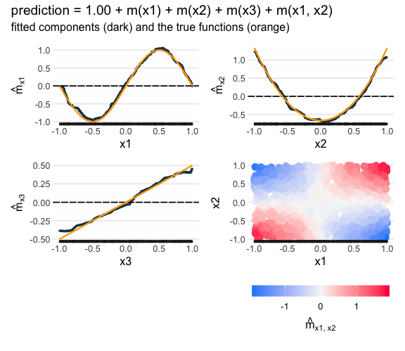

randomPlantedForest implements Random Planted Forest (Hiabu, Mammen & Meyer), a tree ensemble whose predictions you can read off directly. The explanation is exact and is not a post-hoc approximation.
The fitted model is a short sum of main effects and interactions. Interactions of order three or higher are simplified such that they can be displayed as the sum of a limited number (max_panels) of heat maps; often without loss in accuracy.

The figure shows a model fitted to simulated data, with a fourth predictor x4 that has no effect. The model found the four true components and nothing else, in one call:
model <- rpf(y ~ ., data = sim)Why use it
Interpretability & Accuracy A random planted forest can be fully visualized and provides state-of-the-art accuracy. By default the fit prunes irrelevant terms such that the fit is easier to comprehend and only keeps relevant terms.
No tuning needed While some parameters can be changed, random planted forest works very well in its default settings and needs no tuning.
-
Instead of a GAM or GA²M.
- You do not specify the interactions: the forest finds which pairs and triples matter.
- Smoothness is not assumed.
-
When it does not fit.
- Outcomes driven by interactions of many predictors (images, text)
- Data too large (if memory or computational time is an issue one can reduce the number of families
n_familiesand the maximal order of interactionmax_interaction; usually at the cost of some accuracy) - Complex data (work in progress): e.g. time series, dependent rows, survival data etc.
What the default does
A plain rpf(y ~ ., data) takes three steps, each with its own switch:
-
Grow 200 tree families of up to three-way interactions, choosing the number of splits out of bag while they grow (
n_splits = NULL). -
Prune the forest’s components to those that matter, with the rule and threshold chosen out of bag (
prune = TRUE). -
Simplify: every kept three-way component is coarsened such that it can be visualized as the sum of at most 10 heat maps, and the model is pruned again (
max_panels = 10).
Installation
From r-universe:
install.packages("randomPlantedForest", repos = "https://plantedml.r-universe.dev")or from GitHub:
# install.packages("pak")
pak::pak("PlantedML/randomPlantedForest")Regression
Ozone in New York, from daily temperature, wind and sunlight:
library(randomPlantedForest)
air <- na.omit(airquality)
set.seed(1)
ozone <- rpf(Ozone ~ ., data = air)
ozone
#> ── Random Planted Forest model ─────────────────────────────────────────────────
#> Regression. Prediction = intercept + the sum of 4 components.
#> Intercept: 47.1412
#>
#> Components (largest first), importance = share of the variance of the prediction on the training rows:
#> component importance
#> Temp 41%
#> Wind 32%
#> Temp:Wind 13%
#> Solar.R 3.1%
#>
#> How it was chosen:
#> The forest: 200 tree families of 35 splits (chosen out of bag; growing stopped at 35).
#> From the forest's 25 nonzero components (purified): those with a share of at least 1% of the forest's Var(prediction), each with one coefficient, fitted out of bag (rule R).
#> Rule and threshold chosen by out-of-bag error (1-SE rule; 5 folds, seed 682372961) among 16 candidates.
#> Left out: 21 components, shares together 2.9% (largest Month, 0.83%).predict() returns a tibble, and predict_components() the components, which add up to it:
predict(ozone, head(air, 3))
#> # A tibble: 3 × 1
#> .pred
#> <dbl>
#> 1 31.0
#> 2 22.8
#> 3 17.4
head(predict_components(ozone, head(air, 3))$m)
#> Solar.R Wind Temp Temp:Wind
#> <num> <num> <num> <num>
#> 1: 2.062333 1.8646920 -16.29678 -3.804457
#> 2: -3.976785 0.9708856 -15.70053 -5.606435
#> 3: -1.213864 -10.5361640 -15.41624 -2.609963Learn more
- Get started: fit, print, predict, read the components.
- Reading the model, How the forest is grown.
- The number of splits and further tuning, Pruning to a sparse model, Classification.
- Speed, memory and saving models.
- The glex package plots the components and computes other explanations from them.
Citation
Hiabu, M., Mammen, E., & Meyer, J. T. (2020). Random Planted Forest: a directly interpretable tree ensemble. arXiv preprint arXiv:2012.14563. https://doi.org/10.48550/arXiv.2012.14563
citation("randomPlantedForest") gives the BibTeX entry.